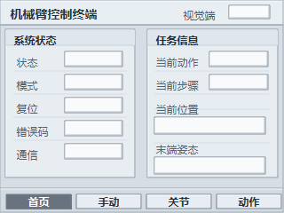

首页总览 v4，白色框就是 TJC 里需要放动态文本/数字控件的位置

这版背景已经把固定文字画进图片里，TJC 里只需要在白框上放动态值控件。
| 内容 | 建议控件 | x,y,w,h |
|---|---|---|
| 视觉端状态 | 文本 | 258,6,47,16 |
| 状态 | 文本 | 73,58,66,18 |
| 模式 | 文本 | 73,84,66,18 |
| 复位 | 文本 | 73,110,66,18 |
| 错误码 | 数字 | 73,136,66,18 |
| 通信 | 文本 | 73,162,66,18 |
| 当前动作 | 文本 | 236,58,67,18 |
| 当前步骤 | 文本 | 236,84,67,18 |
| 当前位置 | 文本 | 174,132,126,20 |
| 末端姿态 | 文本 | 174,177,126,20 |
底部导航文字已经画进背景。如果你想继续用按钮控件覆盖，也可以把按钮设置成透明或只保留触摸区域。